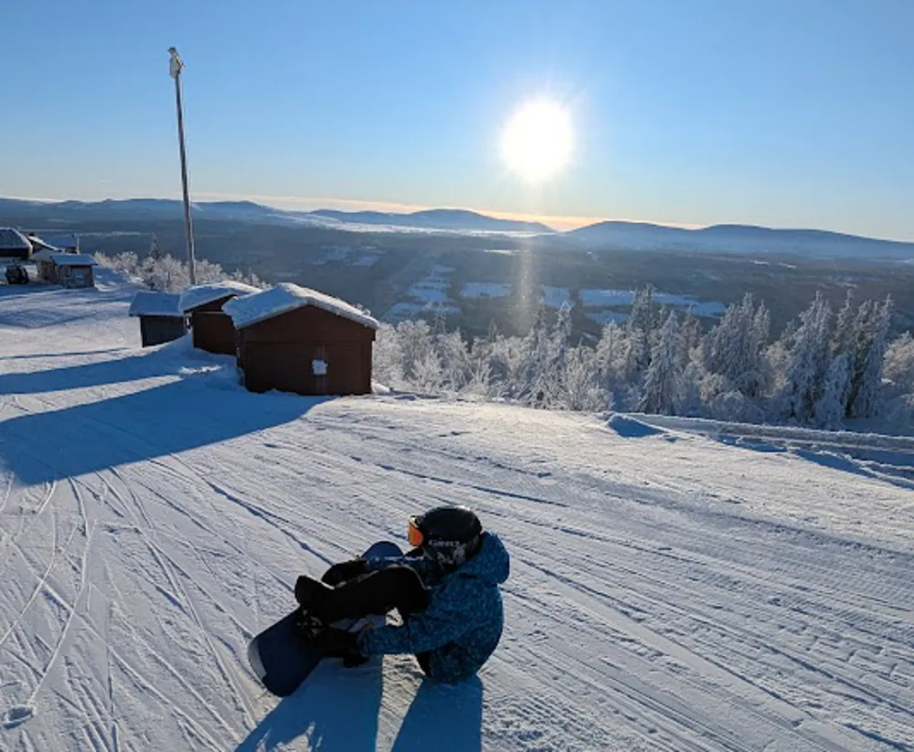

Insändare

Annorlunda sportlovsvecka
Under sportlovsveckan emigrerar varje år stora delar av skolungdomen samt tillhörande familj flyttfågelsartat norrut i hopp om att få lite avslappning i form av skidåkning, afterski och såklart den efterlängtade liftkön. Men det är inte billigt att arrangera skidresa och således är det inte alla som har chansen till att göra denna lyxiga flykt. Eleven Xerxes Johansson NANAEK25 är en som inte har haft råd med skidresan i år. "Ja, det är ju såklart synd att man inte får chansen att tränga sig i liftköerna eller klämma sönder sina fötter i pjäxorna, men man får helt enkelt göra det bästa av situationen." berättar han. "Själv har jag åkt i backen utanför skolan på väg ner mot tågstationen, den är inte så värst brant eller lång, och man får lägga ner mer tid på att staka sig upp igen än att faktiskt åka. Stakningsproblemet löste jag lätt genom att lifta med förbipasserande bilar, men det största problemet är ju såklart gruset, men om jag bara vallar skidorna efteråt tror jag inte pappa märker att jag har lånat dem. Om priserna håller i sig tills nästa år tror jag att jag låter bygga en knapplift och tar 2000 kr om dagen för skipass, och då kan man ju också ta liften från tåget när isen väl fryser på!"